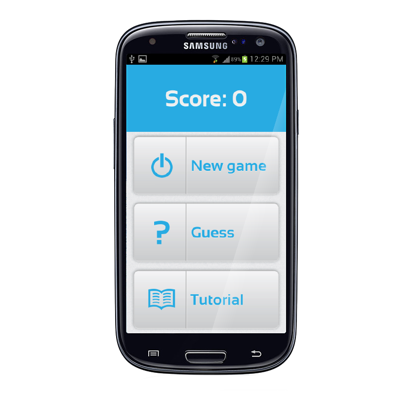
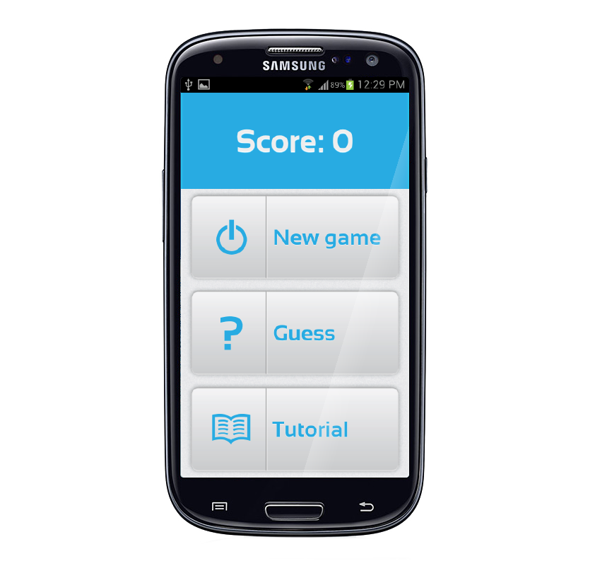

Sketches

Design exploration
I started up the course with an application on iOS. It is a dictionary in a form of mind map. User types in the word in their language, and construct related concept, at the same time they will see the translation of a designated language, side by side. It is hope to helps language learner master the vocabularies easier.
The idea made into the shortlist. However I myself consider it not good enough. As well as the quality of online translation engine like: google is not really good yet. Therefore I killed it, and picked up a new idea: SOUNDIT
 

Overall, I am happy with this project. I am in a very good team. Shu, and George are amazing team member. And I glad that I contributed to the out come of the project.
My Contribution
In the team I played the role of graphic designer, and interface design. At the beginning of the project, I have no experience in designing user interface for visual impaired people. You might think that: Since the game is for visual impaired people, the interface is not really important. But the game is also played by non-visual impaired people, still it need to looks nice. Except totally blinded people, there are people who are partially impaired, colour blinded. I still need to design a visible interface for those people, and pleasing to non-visual impaired at the same time.
When we moved to the web platform, I researched on multitouch with javascript, and HTML. I have made some progress with multitouch on web platform. However, since we realised web platform is a dead end, I had to give up, my one week exploration with multitouch on website. That was a little sad, however, I did learnt something from that, I am pretty sure that it will be helpful in a near future.
When we started with android. It is totally alien for me. I have never used android before. I don't have an android device. I only learnt recently that: android is java based. It mean I have to get myself familiar with the platform as soon as possible since I already wasted two weeks on javascript and HTML. Fortunately, I am quite familiar with XML, and Java. I started to learn laying out in android using xml and images. I learnt how to used 9-slices image on android, to optimised user interface for different screen size. However it does not give me a desire out come. So I prepared a set of different icons, and images for different screen size, and resolution.I have tried with many look and feel for buttons, fonts, and colours before come up with the final design.
Improvement
Even though the interface looks nice. However, it is not tested with visual impaired people, especially partially visual impaired people, and colour blinded. When I look at the interface, I am keep saying to myself: Does blue and white give enough contrast? The font size should be bigger. I really want to make the font size bigger
In term of interaction, since we have not test with visual impaired user, I am wondering: does the interface really work for them? I would love to test it out with all different type of visual impaired people.
There is also something that I can not stress enough: mental model. Since Visual convey a large amount of game concept, and metal model. Listen to just audio clue could not give user enough information on the game? Therefore, the tutorial section need a lot improvements, and the game need to be heuristically evaluated.
The game itself also need to be improve, even though we tried implementing a simple score system, as an aspect of gamification. Bonus, and reward also need to be implemented in the future to retain player interested.

Portfolio
What I wanted to do is presenting this projects in my existing portfolio at: http://deyesign.com, it is powered by wordpress, and I customised the theme however within the constrain of the course, I am just make this static portfolio. Since it is quite simple, I concentrate on making the interface look good with css, but not on fancy animation, and javascripting.
I started with a draft sketch on a tissue, and mocked it up in illustrator. Grid system, is the backbone for my layout. For look and feel, I adopted the look and feel of Soundit: including visual elements, font and colour. However, I rendered some 3D-like icons, to make some variation for the page.
With CSS3, web font, I am able to translate my design from illustrator to HTML easily. I have tested it on: Safari, Chorme, and Firefox, but not internet explorer. What I will do if I have more time is: "Directing visitors who use internet explorer, to chrome, or firefox, safari download page."


Design studio
It have been a good course, I have amazing team members, we managed to built a decent prototype together. Our project was presented in the inovation shows case in 2012. As a user centered design application
Future development: We want to turn this application in to an educational game, for kids: around 4-7 years old, teaching kids with pictures and sounds. Publish it to the google store